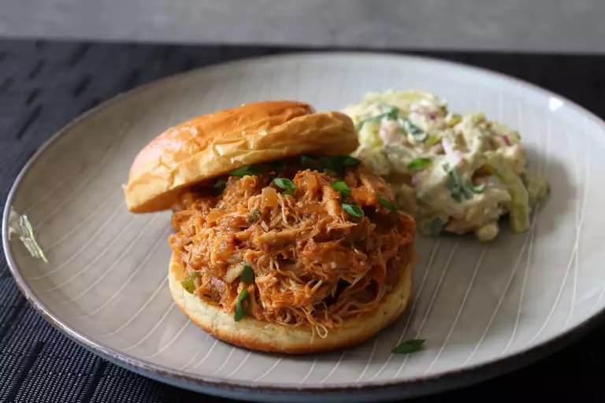

Pulled Chicken Sloppy Joes, or "Sloppy Chickens," are a delicious twist
on the classic sloppy joe, featuring tender, shredded chicken simmered
in a rich, tangy, and slightly sweet sauce. This easy, crowd-pleasing
dish is packed with bold flavors from barbecue sauce, tomatoes, and
spices, all served on a soft bun for a messy yet satisfying bite.
Perfect for busy weeknights or casual gatherings, these Sloppy Chickens
offer a lighter alternative to traditional beef sloppy joes while still
delivering big, comforting flavors.
Ingredients
- 1 tablespoon vegetable oil
- 4 cloves garlic, minced
- ½ large yellow onion, diced
- 1 tablespoon brown sugar, or to taste
- 2 teaspoons kosher salt, or to taste
- 1 teaspoon ground black pepper
- 1 pinch cayenne pepper, or to taste
- 2 pounds boneless, skinless chicken thighs
- ¾ cup ketchup
- 1 tablespoon Dijon mustard
- ½ teaspoon Worcestershire sauce
- 1 tablespoon hot sauce, or to taste
- 1 cup water
- 2 tablespoons thinly sliced green onions
- ½ cup diced jalapeño pepper
- 4 medium hamburger buns - split, toasted and buttered
Steps
-
Add vegetable oil to a saucepan, and then add (in this order) garlic,
yellow onion, brown sugar, kosher salt, black pepper, cayenne, chicken
thighs, ketchup, Dijon mustard, Worcestershire sauce, and hot sauce.
-
Place over high heat and wait until you can hear the garlic sizzling
in the bottom of the pan, about 30 seconds. Let garlic sizzle for
about 30 seconds before adding the water. Stir everything together and
wait for the mixture to boil.
-
Reduce heat to medium-low and simmer, uncovered, until the chicken
falls apart, about 1 1/2 hours.
-
Stir in the green onions and peppers and cook until the peppers just
turn tender, 3 to 5 minutes more. Taste for seasoning.
- Remove from heat and serve on toasted hamburger buns.